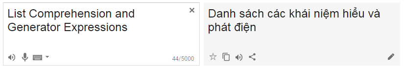

Khi học Python hoặc mò StackOverflow, sẽ không khó để bắt gặp những lệnh liên quan đến List Comprehensions và Generator Expressions như dưới đây.
[i for i in range(0, 10)]
(i for i in range(0, 200))
tuple(range(0, 5))
Vừa rồi thì mình có trò chuyện với một vài bạn đang học lập trình Python và cũng đã có background về lập trình C, C++. Sau khi nói chuyện thì phát hiện ra rằng, ngay cả khi bạn đã nắm được khái niệm cơ bản về List và Generator thì cũng có thể gặp đôi chút khó khăn hoặc hiểu nhầm với Comprehensions và Expressions. Lý do thì khó mà liệt kê được hết, có thể đó là do C, C++ đã tạo một thói quen trong tư duy khiến các bạn ấy hiểu nhầm vấn đề, có bạn đã dùng rất nhiều rồi nhưng không nghĩ đó chính là Comprehension, hoặc đối với một số bạn thì 2 từ này cắt nghĩa ra tiếng Việt hơi khó và làm nhiều bạn hiểu nhầm chúng là những kiến thức nâng cao.

Đúng là cũng hơi khó để cắt nghĩa 2 từ này ra tiếng Việt để hiểu được dễ dàng, mình đã thử Google Translate và được kết quả như trên. Trong bài này mình sẽ cố gắng diễn giải từ những khái niệm cơ bản nhất là List và Generator trong Python lên, lý do là tiện công chuyện giới thiệu cho các bạn mới học Python, sau đó so sánh chúng với nhau cũng như kết hợp với các ví dụ để mọi người có thể hiểu được chúng một cách rõ ràng nhất.
Như bất cứ bài viết nào trên blog này, nếu bạn thấy bài viết có phần nào chưa đúng hoặc thiếu sót, hãy comment cho mình bên dưới bài viết.
List trong Python (Cơ bản)
TL;DR: Cũng giống như mảng trong các ngôn ngữ lập trình khác, được dùng để chứa giá trị của một chuỗi - danh sách các dữ liệu tuy nhiên, trong Python list có thể chứa được nhiều kiểu dữ liệu khác nhau.
Kiểu dữ liệu: Ngay từ khi học tiểu học chúng ta đã được phân biệt giữa chữ và số với mục đích khác nhau, trong máy tính cũng vậy, dữ liệu sẽ được chia thành các kiểu khác nhau để dễ dàng xử lý. Tìm hiểu thêm: Kiểu dữ liệu - wiki
List trong Python được biểu thị bằng một tập hợp các giá trị phân cách nhau bởi dấu , và toàn bộ bao ngoài bằng []
list_1 = [1, 2, 3, 4, 5]
list_2 = ['c', 'u', 'c', 'c', 'o', 'd', 'e']
Mình sẽ giữ nguyên sử dụng từ
Listthay vì sử dụng từdanh sáchhoặcchuỗi, mảng. Thực tế việc dịch ra đôi khi lại làm cho người học dễ nhầm lẫn giữa các kiểu dữ liệu.
List trong Python có khả năng lưu trữ cùng lúc các kiểu dữ liệu khác nhau, hoặc thậm chí chứa một chuỗi con trong nó:
list_3 = ["a", 1, 2, "hi", [1, 2, 3], list_2]
Để đọc một giá trị trong list, ta dùng index (vị trí của phần tử):
>>> list_1 = [1, 2, 3, 4, 5]
>>> list_2 = ['c', 'u', 'c', 'c', 'o', 'd', 'e']
>>> list_3 = ["a", 1, 2, "hi", [1, 2, 3], list_2]
>>> print(list_3[1])
1
>>> print(list_3[3])
hi
>>> print(list_3[4])
[1, 2, 3]
>>> print(list_3[5])
['c', 'u', 'c', 'c', 'o', 'd', 'e']
Lưu ý là trong một list thì phần tử đầu tiên có giá trị index = 0; Phần tử cuối cùng có index = len(list) - 1; Với len(list) là độ dài (độ lớn - số phần tử) của list. Trong trường hợp list_3, len(list_3) chỉ quan tâm tới số phần tử trực tiếp của list_3 và không quan tâm tới số phần tử của các list con hoặc kiểu dữ liệu con trong list_3;
>>> len(list_3)
6
Việc sửa dữ liệu trong list cũng được thực hiện bằng cách sử dụng index của phần tử:
>>> list_3[5] = 1
>>> print(list_3)
['a', 1, 2, 'hi', [1, 2, 3], 1]
Ngoài ra còn một số hoạt động khác có thể được thực hiện trên list bạn có thể tham khảo thêm, mặc dù chúng khá cơ bản những mình không muốn đi quá xa vào phần này nên sẽ liệt kê ra sau đây:
>>> # Xóa phần tử
>>> a = [1, 2, 3]
>>> del a[1]
>>> print(a)
>>> [1, 3]
>>>
>>> # Nối chuỗi
>>> print([1, 2, 3] + [4, 5, 6])
>>> [1, 2, 3, 4, 5, 6]
>>>
>>> # Nhân chuỗi
>>> print(['Hi!'] * 4)
>>> ['Hi!', 'Hi!', 'Hi!', 'Hi!']
>>>
>>> # Kiểm tra tồn tại của phần tử trong chuỗi
>>> 3 in [1, 2, 3]
>>> True
>>> 4 in [1, 2, 3]
>>> False
>>>
>>> # Lặp
>>> for x in [1, 2, 3]: print(x)
>>> 1 2 3
>>>
>>> # Slicing
>>> L = ['cuccode', 'Cuccode', 'CUCCODE!']
>>> L[-2]
>>> "Cuccode"
>>> L[1:]
>>> ['Cuccode', 'CUCCODE!']
>>>
>>> list_a = ['a', 'b', 'c', 'd']
>>> print(list_a[1:-1])
>>> ['b', 'c']
>>>
>>> # Replace by slicing:
>>> list_a[0:2] = 'z' ## replace ['a', 'b'] with ['z']
>>> print(list_a)
>>> ['z', 'c', 'd']
List Comprehension
Bây giờ chúng ta sẽ bắt đầu với 1 trong 2 định nghĩa đang cố giải thích từ đầu. Sau khi đã được giới thiệu qua về list ở bên trên, các bạn có thể thấy cách đơn giản nhất để tạo ra list đó là định nghĩa nó:
list_a = [1, 2, 3]
List Comprehension cho phép chúng ta tạo ra một list từ một kiểu dữ liệu có sẵn khác chỉ với một vòng lặp for:
>>> list_a = [x * 2 for x in range(10)]
>>> print(list_a)
[0, 2, 4, 6, 8, 10, 12, 14, 16, 18]
Đoạn code trên mình dùng để minh họa việc sử dụng List Comprehension là chính, thực tế thì bạn có thể tạo list như trên bằng cách:
list(range(0, 19, 2))
Khác biệt là bạn có thể sử dụng những điều kiện phức tạp hơn để tạo ra list mình mong muốn, ở đây mình lấy ví dụ lấy danh sách các số chia hết cho 3 trong khoảng từ 0 đến 10:
>>> list_b = [x for x in range(10) if x % 3 == 0]
>>> list_b
[0, 3, 6, 9]
Đơn giản đúng không? Hoàn toàn nhanh và dễ hiểu hơn việc bạn viết:
list_b = []
for x in range(10):
if x % 3 == 0:
list_b.append(x)
Bây giờ chúng ta sẽ thêm một ví dụ phức tạp hơn chút:
Tạo list bằng cách gộp 2 list:
>>> # http://djangostars.com/blog/list-comprehensions-and-generator-expressions/
>>> nums = [1, 2, 3, 4, 5]
>>> letters = ['A', 'B', 'C', 'D', 'E']
>>> nums_letters = [[n, l] for n in nums for l in letters]
>>> # the comprehensions list combines two simple lists in a complex list of lists.
>>> print(nums_letters)
[[1, 'A'], [1, 'B'], [1, 'C'], [1, 'D'], [1, 'E'], [2, 'A'], [2, 'B'], [2, 'C'], [2, 'D'], [2, 'E'], [3, 'A'], [3, 'B'], [3, 'C'], [3, 'D'], [3, 'E'], [4, 'A'], [4, 'B'], [4, 'C'], [4, 'D'], [4, 'E'], [5, 'A'], [5, 'B'], [5, 'C'], [5, 'D'], [5, 'E']]
>>>
Còn một điều nữa, đó là cái Comprehension này không chỉ giới hạn ở List, nó cũng có thể được dùng để tạo Dictionary và Set:
>>> # http://djangostars.com/blog/list-comprehensions-and-generator-expressions/
>>> dict_comp = {x:chr(65+x) for x in range(1, 11)}
>>> type(dict_comp)
<class 'dict'>
>>> print(dict_comp)
{1: 'B', 2: 'C', 3: 'D', 4: 'E', 5: 'F', 6: 'G', 7: 'H', 8: 'I', 9: 'J', 10: 'K'}
>>> set_comp = {x ** 3 for x in range(10) if x % 2 == 0}
>>> type(set_comp)
<class 'set'>
>>> print(set_comp)
{0, 8, 64, 512, 216}
List Comprehension cho phép chúng ta tạo ra các cấu trúc dữ liệu phức tạp chỉ với những lệnh rất ngắn và tự nhiên theo phong cách Python (pythonic). Tuy nhiên có một nhược điểm đó là dữ liệu sinh ra sẽ được lưu toàn bộ vào bộ nhớ. Đối với những dữ liệu lớn, cách tốt hơn đó là sử dụng generator.
Iterate & Iterable & Iterator
What?
Vâng, để hiểu về Generator Expressions, bạn cần có kiến thức về Generator, để hiểu về Generator, bạn cần phải hiểu về Iterator, và để hiểu về Iterator thì bạn cần biết Iterable, Iterate, Iteration là gì ... Đại loại thế.
stackoverflow.com - What exactly are Python's iterator, iterable, and iteration protocols?
Iterate có thể hiểu là hành động duyệt từng phần tử của một danh sách (sequence).
Chú ý sequence trong Python là một kiểu giữ liệu mang tính bao quát, các kiểu dữ liệu như str (chuỗi ký tự), list, tuple đều được định nghĩa là một kiểu sequence
Ví dụ như sau có thể hiểu là việc Iterate từng phần tử, dĩ nhiên ta bỏ qua việc để có thể thực hiện được việc này thì đều dùng đến các khái niệm iterator và iterable của string rồi:
string = "abc"
for char in string:
print char
Nếu một kiểu dữ liệu cho phép ta Iterate, ta hiểu nó là Iterable
Tưởng tượng việc điểm danh một lớp học bằng cách xếp hàng, người đầu hàng hô 1, người sau hô 2, cứ thế đến cuối hàng. Nếu lớp chịu xếp hàng thì mới điểm danh được, khi đó gọi lớp này là Iterable, hành động điểm danh là Iterate (động từ), danh từ cho việc này là Iteration.
if lop_hoc.co_danh_sach == True:
for hoc_sinh in lop_hoc:
if hoc_sinh.di_hoc == True:
print "Có"
Iteration là cơ sử nền tảng của việc xử lý dữ liệu trong Python. Khi làm việc trên các dữ liệu có kích thước lớn cần phải có cách thức để xử lý dữ liệu một cách nhanh gọn và đơn giản nhất. Trong Python có thể miêu tả cách thức làm việc này là fetch the items lazily. Hiểu một cách đơn giản là làm một lần và chỉ khi được yêu cầu.
Như ở phần trước, chúng ta có thể tạo ra một list bằng cách sử dụng comprehension, thông tin các phần tử của list này sẽ được lưu toàn bộ dưới bộ nhớ. Vấn đề gặp phải đó là nếu chúng ta cần tạo một list cực lớn, hàng triệu phần tử chẳng hạn, hoặc các phần tử trong list cũng có kích thước lớn, khi đó ta sẽ gặp vấn đề với việc tạo và quản lý list dưới bộ nhớ.
Dĩ nhiên list chỉ là một ví dụ minh họa cho việc cấp phát bộ nhớ để tạo dữ liệu khi chương trình hoạt động. Trên thực tế có những trường hợp chương trình sẽ phải đọc những dữ liệu có kích thước rất lớn, việc ghi và đọc toàn bộ dữ liệu vào bộ nhớ chương trình là bất khả thi hoặc tốn rất nhiều thời gian.
Bất cứ thứ gì bạn có thể for ... in ... được thì interable.
Có vẻ như cấu trúc for ... in ... của Python được thừa hưởng từ ngôn ngữ tiền nhiệm của nó: ABC.
FOR word IN line:
do something
Cấu trúc này có thể viết lại cho dễ hiểu hơn bằng giả mã như sau:
word = line[0]
do something
word = line[1]
do something
word = line[2]
do something
...
cứ như vậy cho đến hết (IndexError)
Về bản chất bên trong của ngôn ngữ Python, để có thể duyệt được qua các phần tử của một đối tượng, đối tượng đó phải hỗ trợ phương thức __iter__. __iter__ sẽ trả về một "iterator". Một đối tượng "iterable" có thể trả về đối tượng "iterator" khác nhau khi được duyệt khác nhau.
Nói về iterator, iterator được trả về khi duyệt một đối tượng iterable và được hỗ trợ (cài đặt) sẵn bên trong nó 2 phương thức: __iter__ và __next__, 2 phương thức này được gọi là iteration protocol.
- Phương thức
__iter__trả về chính đối tượng iterator. Để có thể sử dụng các câu lệnhforvàinthì bắt buộc các đối tượng iterable và iterator phải hỗ trợ__iter__. - Phương thức
__next__trả về phần tử tiếp theo. Nếu không còn phần tử nào nữa thìStopIterationexception sẽ được raise.
Một hàm dựng sẵn của Python là iter nhận đầu vào là một đối tượng "iterable" và trả về kết quả là một iterator.
Xét một ví dụ duyệt phần tử trong một list:
for x in mylist:
# do something
Python sẽ thực hiện 2 việc sau:
- Lấy đối tượng iterator:
Được thực hiện bằng cách gọi iter(mylist) -> hàm này sẽ thực thi phương thức __iter__ như đã nói ở trên và trả về một đối tượng mà có thể gọi __next__().
- Dùng iterator để duyệt qua từng phần tử:
Tiếp tục gọi phương thức __next__() trên iterator được trả về từ bước 1. Giá trị trả về khi gọi __next__() được trả vào biến x và thân vòng lặp # do something được thực thi. Khi một exception StopIteration được sinh ra khi thực hiện __next__() có nghĩa là không còn phần tử nào để duyệt nữa và khi đó vòng lặp kết thúc.